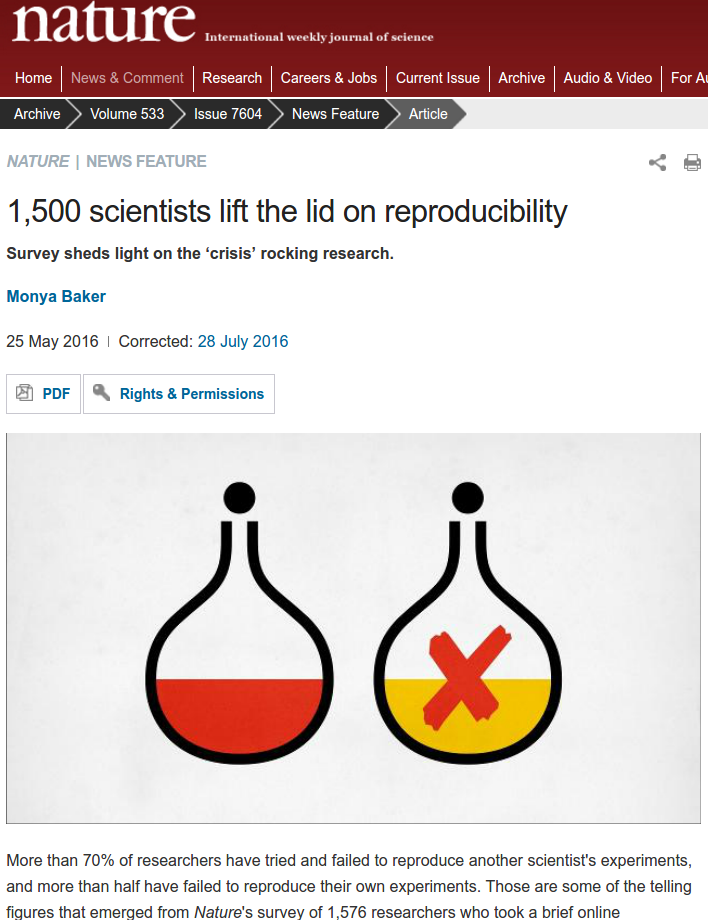

Linkflows
Enabling a web of linked semantic publishing workflows
Linkflows
Enabling a web of linked semantic publishing workflows
Cristina-Iulia Bucur
28 March 2018 @ Online Information Quality, Lorentz Workshop
These slides: https://bit.ly/2Gkd4ud or https://goo.gl/jYwifu
About Linkflows
- PhD project started in February 2017
- Supervisors: Tobias Kuhn, Davide Ceolin, Lora Aroyo
- Collaborations:
Why Linkflows?
- Scientific publishing: effective means to share information and knowledge
- Shift towards the digital environment
- New ways to represent fine-grained knowledge
- Linked Data: enable the exchange, reuse and linking of data on the Web
Challenges
Challenges: Reproducibility
Challenges: Reproducibility

Challenges: Reproducibility
Challenges: Reproducibility
Challenges: Reproducibility
Challenges: Reproducibility
Challenges: Reproducibility
Challenges: Reproducibility
Challenges: Reproducibility
Challenges: Reproducibility
Challenges: Reproducibility
Challenges: Reproducibility
Challenges: Reproducibility
Challenges: Reproducibility
Challenges: Reproducibility
Challenges: Reproducibility
Challenges: "Knowledge Burying"

|
More than 40% of information lost from publishing to mining RIP (Rest in Paper) knowledge Need to preserve information about the processes |
Challenges: Digital Publishing
- Semantic Web, Linked Data
- Understandable content for both humans and machines
- Digital artifacts: text, datasets, code, figures, slides, spreadsheets, multimedia objects, methods, protocols, results and reviews, annotations, etc.
- Scientific workflows: how digital artifacts are consumed and produced
Challenges: Digital Publishing
- Semantic Web, Linked Data
SPAR ontologies: Semantic Publishing and Referencing Ontologies
Challenges: Digital Publishing
- Semantic Web, Linked Data

Fine-grained interconnected parts of knowledge; e.g. nanopublications
Challenges: Quality assessment

Challenges: Quality assessment
- We need a new way of assessing the quality of scientific publications
- Debatable and bias-able indicators; e.g. Journal Impact Factor
Challenges: Decentralization


|
Editors are from Mars,Referees are from Venus, andAuthors are from Earth. No control of a central authority anymore; e.g. publishing house Decentralization of content; e.g. academic peer-to-peer networks |
Challenges
- Reproducibility
- "Knowledge Burying"
- Digital publishing
- Quality assessment
- Decentralization of content
Focus
How can scientific workflows that produce and consume digital artifacts be assessed, linked and decentrally executed across platforms, such that individual steps of a single workflow can be distributed?Approach
- Develop a simple model for linked workflows → linkflows
- Choose sample articles from IOS Press and Netherlands Sound and Vision
- Instantiate model with sample articles
- Use Linked Data Notifications (LDNs) for decentralized execution
Linkflows: Model
| "New" model (v.0.1 alpha) | PROV-O |
|---|---|

|

|
Linkflows: Use cases
- IOS Press: publishing house based in Amsterdam
- Netherlands Sound and Vision, the Netherlands cultural archive, has over 70% of the Dutch audio-visual heritage
- VIEW Journal of European Television History and Culture
- Tijdschrift voor Mediageschiedenis (Magazine for Media History)
- Mind of the Universe videos

Model instantiation with example paper (v.0.1 alpha)

Reviewing workflow using LDNs

|
|
Example content of a reviewing notification
HTTP/1.1 200 OK Content-Type: text/turtle @prefix schema: <http://schema.org/> . [ a schema:ReviewAction; schema:agent [ a schema:Person; schema:name "Stephen Pettifer" ]; schema:object <https://datasciencehub.net/system/files/ds-paper-511.zip> schema:result [ a schema:Review; schema:reviewBody "This is an interesting and somewhat controversial..." ] ] .
Linkflows: linked workflows
- Represent scientific knowledge as nodes in a network
- Approach compatible with "traditional" PDFs, SPAR-represented articles, nanopublications, etc.
- Decentralized peer-review process
- New measure for quality assessment; e.g. network analysis